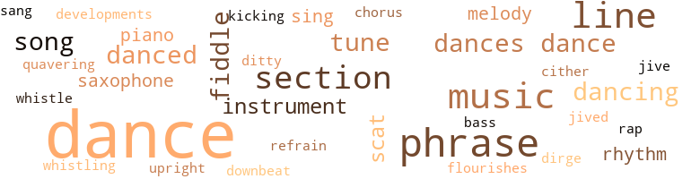
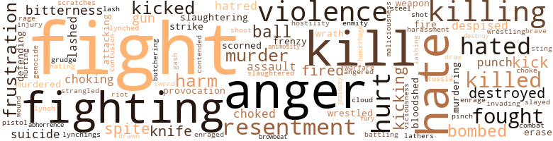

Uncertain Sound (The), by Gilbert, Herman Cromwell (1969)
147 music-related terms matched in this text.
Most frequent terms in this topic: dance (50); music (9); section (7); line (7); dances (7)
bass.n.07
Definition: the member with the lowest range of a family of musical instruments
| word | sentence |
|---|---|
| bass | Suddenly he felt loneliness creeping into him , seeping underneath the low moan of the saxophone , crawling in beneath the erratic hum of the bass fiddle . |
chorus.n.01
Definition: any utterance produced simultaneously by a group
| word | sentence |
|---|---|
| chorus | There was a subdued chorus of agreement . |
dance.n.01
Definition: an artistic form of nonverbal communication
| word | sentence |
|---|---|
| dance | Remember when we have our little talk at the dance and we agreed that the majority of our people do n't believe we deserve equality ? |
| dance | So this was Dennis ' creed , the thing at which he had hinted at the dance ; the thing he , Ralph Coleman , had been too busy baptizing himself in his own tears to take time to explore . |
| dance | " At the dance . " |
| dance | " At the dance ? |
| dance | " You said you saw me at the dance last night . |
| dance | But you were at a dance , while I walked the streets scared and alone . " |
| dances | But you know I 'm not good at dances . |
| dance | In a hick town like this , a dance like this means somthing . " |
| dances | " Are you sure you 're not staying and taking in a few dances ? " |
| dance | Trapped like he was trapped when he tried to enjoy himself at a dance . |
| dances | He took a sip of whiskey from his now less than half filled glass , feeling the memory of the long chain of events which had molded his attitude toward public dances gnaw away at the back of his mind . |
| dance | Vividly he recalled the first time he had tried to dance at a public dance . |
| dance | She was crazy about dancing , and for more than a year had been trying to get him to take her to a school dance . |
| dance | On this particular night , he recalled , the dance was to be held in the school gymnasium , on the basketball floor alter the game . |
| dance | So he had stayed for the dance . |
| dance | As he had made arrangements to stay overnight with Bill , and did n't have any way to get home , he had roamed the streets until the dance was over . |
| dances | At dances he had got in the habit of sitting in inconspicuous places and watching the couples as the moved about on the floor , pigeonholing impressions from their gestures and mannerisms . |
| dance | His people were dancing the freedom dance . |
| dance | Not many cars , he told himself , considering the number of people at the dance . |
| dance | But the dingy orange-colored spread had a torn spot near the pillow that he had n't quite hid before leaving for the dance . |
| dance | At the dance , with hundreds of people , he had been lonesome , and uncomfortable . |
| dance | He had left Louise at the dance , and that was that . |
| dance | He recalled the decision he had made at the dance tonight to end their affair . |
| dance | " Why do n't you say what was wrong with you at the dance tonight ? " she asked . |
| dance | But other months , the cotton hoe , the cotton sack , the stubborn mule and the hay rack joined his playmates to create a crazy quilt in a confused dance . |
| dance | " Last night at the dance I mentioned to Ralph that we had n't had one of these sessions in a long time . " |
| dance | " How was the dance last night ? " |
| dance | He supposed Bill was remembering what he had told him at the dance - that he was leaving Louise alone . |
| dance | He was n't being philosophic , as he was at the Eighth of August dance when he had told himself that Bill would be good for her . |
| dance | He was wearing the black suit he had worn at the Labor Day dance and he was satisfied with the contrasting effect of the white shirt and maroon tie . |
| dance | How many times had he and his childhood playmates stuck tassels like these in bands fashioned around their heads and danced the Indian dance ? |
| dance | Some people sure came to a dance to dance , he told himself , watching the struggling couples as they jumped to the licks of a red-hot jazz number , their stomping feet and frenzied cries joining the blaring horns and crashing drums in a terrific assault against his ears . |
| dances | Public dances had always made him feel isolated , but tonight he felt more out of tune than usual . |
| dances | " I find myself always wondering why you come to dances , " Bill said , his round brown eyes twinkling . |
| dances | I know why you come to dances . |
| dance | He leaned back on the car scat and watched the bright stars dance on the northern horizon as she U-turned in the highway for the trip back to town . |
| dance | Now watching the expert way she was keeping the two wolves at bay , he suddenly felt sorry that he had turned down her request that he accompany her to the dance , guilty that he had told her he did n't know if he were coming . |
| dance | Ralph felt his lips go tight against his teeth as his mind tried to weave the pattern of the dance into the lives of the dancers . |
| dance | " Nice dance , " Ralph heard himself say . |
| dance | A number of times since their first and only meeting at the Eight of August dance he had thought about calling on Coleman and renewing the invitation he had extended that night . |
| dance | Why Ventura is at the dance . " |
| dance | " The dance at the Armory , " the voice says , even more perplexed . |
| dance | " I thought everybody knew about the dance . " |
| dance | And you realize that you had seen the dance mentioned in the Pyramid but had n't taken time to pinpoint the date in your mind because you knew it was for white people only . |
| dance | Now , with a jolt , you recall that last night Ventura had n't said she was going to the dance ; that she , too , realized it was only for whites . |
| dance | The night was just right for the dance . |
| dance | Just why was he here , hiding like a criminal behind a parked car , waiting for a white girl to come to a for-white-only dance ? |
| dance | And when the washed-out voice on the phone had told him that she had gone to the dance , he had felt a despair so intense that it could not have been possible if there had not been hope before . |
| dance | For some of the hoodlum element was certain to be ; at the dance , and they would n't hesitate to beat hell out of any Negro caught hiding behind a ear watching the town 's finest . |
| dance | But what if she was n't coming to the dance ? |
dance.n.02
Definition: a party of people assembled for dancing
| word | sentence |
|---|---|
| dance | A huge billboard , erected on two-by-fours above the entrance to the hall , announced one of the country 's top white dance bands as the feature attraction . |
dance.v.02
Definition: move in a pattern; usually to musical accompaniment; do or perform a dance
| word | sentence |
|---|---|
| dancing | Bill was looking out across the dance floor and Ralph followed his gaze to where Louise was dancing with one of the men she had met at the bar . |
| dancing | He had thought he had the hang of the thing and was dancing in a manner to put the other kids to shame . |
| dancing | His people were dancing the freedom dance . |
dance.v.03
Definition: skip, leap, or move up and down or sideways
| word | sentence |
|---|---|
| dance | Two men sitting at a table with purposeful looks on their faces , while all about them hundreds of people gave way to dance and laughter . |
| dance | Vividly he recalled the first time he had tried to dance at a public dance . |
| dance | " You have to learn how to dance sometime , " Bill had said , " and it might as well be now . |
| dance | Years later , he had learned how to dance passably to slow music , but he had never been able to summon the courage to tackle fast music . |
| dancing | He might be all right to introduce to a group of ladies at a bridge party , or to go dancing with where everything was formal and correct . |
| danced | Against a background of the man working on the bulldozer , sunbeams danced like lazy raindrops . |
| danced | He danced off the sidewalk , circled wide , and began to run down the middle of the street , heading in the direction he had been going before the man stopped him . |
| danced | How many times had he and his childhood playmates stuck tassels like these in bands fashioned around their heads and danced the Indian dance ? |
| dance | Some people sure came to a dance to dance , he told himself , watching the struggling couples as they jumped to the licks of a red-hot jazz number , their stomping feet and frenzied cries joining the blaring horns and crashing drums in a terrific assault against his ears . |
| dance | Ralph supposed he was picking out a partner to dance with when he was finished talking . |
| danced | As they danced , they seemed to be trying to literally push themselves into the bodies of their partners . |
development.n.09
Definition: (music) the section of a composition or movement (especially in sonata form) where the major musical themes are developed and elaborated
| word | sentence |
|---|---|
| developments | Where recent developments had only solidified the existing elements in his and Taylor 's relationship into a logical and inevitable mass , these same developments had brought new and unsuspected elements into play between him and Bill . |
dirge.n.01
Definition: a song or hymn of mourning composed or performed as a memorial to a dead person
| word | sentence |
|---|---|
| dirge | The memory of Bill 's voice is like a dirge in your mind , signaling an end to self-pity , ushering in the sharp , hard note of guilt : For less than an hour ago , Bill brought you word that Dennis ' office had been bombed , injuring his wife and possibly mortally wounding a client . |
ditty.n.01
Definition: a short simple song (or the words of a poem intended to be sung)
| word | sentence |
|---|---|
| ditty | It reminded him of a little ditty he once had read : " You say to me , endure the storm , To squeeze succor for trouble 's arm , I say to you , is there gain When pain must be relief for pain ? " |
downbeat.n.01
Definition: the first beat of a musical measure (as the conductor's arm moves downward)
| word | sentence |
|---|---|
| downbeat | She was the downbeat of his desires . |
flourish.n.05
Definition: (music) a short lively tune played on brass instruments
| word | sentence |
|---|---|
| flourishes | And in this town like in most places where prostitution flourishes , veneral diseases also flourished . |
jive.v.01
Definition: dance to jive music; dance the jive
| word | sentence |
|---|---|
| jive | " Who you tryin ' to jive . |
| jived | When she jived , it was for a damn good reason ; and since there was no point in subterfuge here , he knew she was feeling what Perkins was feeling . |
kick.v.04
Definition: kick a leg up
| word | sentence |
|---|---|
| kicking | I do n't condemn white people for kicking my ass . |
melody.n.02
Definition: the perception of pleasant arrangements of musical notes
| word | sentence |
|---|---|
| melody | The haunting blues melody of the half-forgotten song filtered in and out of his mind as he fastened the strap around the bulging , battered suitcase and set it in the corner beside the sheet-wrapped bundle containing his other possessions . |
music.n.01
Definition: an artistic form of auditory communication incorporating instrumental or vocal tones in a structured and continuous manner
| word | sentence |
|---|---|
| music | " I ca n't face the music . |
| music | On the dance floor , his feet had refused to move in time to the music . |
| music | Years later , he had learned how to dance passably to slow music , but he had never been able to summon the courage to tackle fast music . |
| music | Years later , he had learned how to dance passably to slow music , but he had never been able to summon the courage to tackle fast music . |
| music | In bed , he realized that sleep would be a long time in coming , and got up and turned on the radio , standing before it until soft music floated out into the room . |
| music | He did n't like the song , but any music was better than none , he told himself . |
| music | He knew that raindrops on the housetop were the music of sleep . |
| music | They discussed music , books , politics , religion , just about everything , until six o'clock . |
| music | Might as well play this string out , Ralph thought , conscious of the babble of voices , the blare of the music and the sound of dancing feet all around them . |
musical_instrument.n.01
Definition: any of various devices or contrivances that can be used to produce musical tones or sounds
| word | sentence |
|---|---|
| instrument | The good Doctor defended this sub rosa segregation as being an instrument of racial progress . |
| instruments | The hat could not keep his eyes away from her slender legs , as her feet , encased in plain black pumps , played about on the floor instruments of the car . |
| instruments | Intermission time , he thought , watching the saxophone player and trumpeter as they carefully laid their instruments across their chairs and walked off the stage toward the bar . |
phrase.n.02
Definition: a short musical passage
| word | sentence |
|---|---|
| phrase | Then , in a little town called Fulton , Missouri , Winston Churchill , with the connivance of Harry Truman , launched the cold war and added the phrase Iron Curtain to the vocabulary of the world . |
| phrase | He was reminded of a phrase be had coined the other night , while thinking about some of the charges the press was making against Stalin . |
| phrases | In fact , he had started framing phrases for a poem about her . |
| phrases | He was tired of people trying to convert him by the use of time-worn phrases and generalities which did n't mean a thing . |
| phrase | He could n't recall having heard the phrase used before in similar context . |
| phrase | He had coined this phrase the first time he had seen her , some two months before . |
| Phrases | Phrases like " losing themselves to escape the hard reality of living " pushed themselves forward , but he did n't try to make them stick . |
| phrase | Remembering it from the other night , he had intended to create a phrase for the cologne , but somehow the intention had slipped his mind . |
| phrases | A grumble chorused through the crowd , punctuated here and there by understandable words and phrases . |
| phrase | It had been a long time since he had used that phrase . |
| phrases | Dammit , why did he have to wait until times of stress to come up with half-forgotten words and phrases out of his experience ? |
piano.n.01
Definition: a keyboard instrument that is played by depressing keys that cause hammers to strike tuned strings and produce sounds
| word | sentence |
|---|---|
| piano | The bass fiddler rested his fiddle against the piano , pulled out a large white handkerchief and mopped his face . |
| piano | Trebles of mournful piano notes sliced through the hall above the chit-chat of hundreds of voices . |
rap.n.05
Definition: genre of African-American music of the 1980s and 1990s in which rhyming lyrics are chanted to a musical accompaniment; several forms of rap have emerged
| word | sentence |
|---|---|
| rap | There was a quick rap on the door . |
refrain.n.01
Definition: the part of a song where a soloist is joined by a group of singers
| word | sentence |
|---|---|
| refrain | The parents picked up the refrain and the church rocked with their voices . |
rhythm.n.04
Definition: the arrangement of spoken words alternating stressed and unstressed elements
| word | sentence |
|---|---|
| rhythm | She spread her slack-clad legs loosely in front of her , clicked her toes together in an uneven rhythm , and laughed with deliberate inflection . |
| rhythm | Watching the dancers now , observing their rhythm , their vigor , their full-blown zest for life , he felt sentiment for them well up inside him . |
sax.n.02
Definition: a single-reed woodwind with a conical bore
| word | sentence |
|---|---|
| saxophone | Suddenly he felt loneliness creeping into him , seeping underneath the low moan of the saxophone , crawling in beneath the erratic hum of the bass fiddle . |
| saxophone | Intermission time , he thought , watching the saxophone player and trumpeter as they carefully laid their instruments across their chairs and walked off the stage toward the bar . |
scat.n.01
Definition: singing jazz; the singer substitutes nonsense syllables for the words of the song and tries to sound like a musical instrument
| word | sentence |
|---|---|
| scat | He leaned his shoulders gingerly against the scat , careful to draw as little attention to himself as possible . |
| scat | He leaned back on the car scat and watched the bright stars dance on the northern horizon as she U-turned in the highway for the trip back to town . |
| scat | She was stretched almost straight on the scat . |
section.n.01
Definition: a self-contained part of a larger composition (written or musical)
| word | sentence |
|---|---|
| section | Ralph shut his eyes against the scene , turned the corner , and walked northward along Joy Avenue , the main street of the Negro section of Egypttown . |
| section | While this was n't exactly the truth - for no Negro had been known to rent an office in the center of the Central Avenue business section - it was true that a Negro could acquire decent office space close enough to this district that there was n't any place in it he could n't reach on foot in a matter of minutes . |
| section | An iron-steaded bed , an oak dresser with a cracked , stained mirror , a bow-legged cooking stove , two cane-bottomed chairs and an old-fashioned oil lamp on the dresser - its feeble circle of light a reminder that there were a lot of shacks in the Negro section of Egypttown which were still without electricity or modern plumbing - made up all the furniture that was in the place . |
| section | He was walking through the center-town , white residential section of Egypttown . |
| section | Louise lived on the extreme west side and to go to her house from where he lived , he had to pass through this section . |
| section | And , of course , that section of the Mexican neighborhood usually frequented by colored soldiers . |
| section | At the end of the block , it turned right , heading toward the rundown section of Ohio Street along which he and Taylor had walked last night . |
sing.v.02
Definition: produce tones with the voice
| word | sentence |
|---|---|
| sing | Reverend Jefferson began to sing , head back , eyes closed , his voice rising in a tremor of emotion . |
| sing | The generator in his body began to sing . |
| sang | He sang songs and was happy . |
song.n.01
Definition: a short musical composition with words
| word | sentence |
|---|---|
| song | The haunting blues melody of the half-forgotten song filtered in and out of his mind as he fastened the strap around the bulging , battered suitcase and set it in the corner beside the sheet-wrapped bundle containing his other possessions . |
| song | He did n't like the song , but any music was better than none , he told himself . |
| songs | He sang songs and was happy . |
| song | You walk the floor and , as the song says , only succeed in wearing out your shoes . |
tune.n.01
Definition: a succession of notes forming a distinctive sequence
| word | sentence |
|---|---|
| melody | Do n't your house feel empty . . . The melody washed through him as his eyes focused on the gaping hole of the clothes closet where hangers , relieved of the burden of his clothes , hung at askew angles on the pole which ran the length of the closet , or lay twisted on the floor . |
| line | The rest of us , the mass of Negroes , must find a dynamic , positive , united line of action somewhere between the extremes of Taylor and McGee without becoming trapped into immobility . " |
| line | Hell , give a voter a chance to think he has a choice and you can keep him in line . |
| tune | So he had changed his tune since last night . |
| lines | Tiny lines appeared on his forehead as he tried to understand . |
| line | He unfolded it and read the first line of what was written on it . |
| lines | But most preachers , along with proselytes in other fields , merely memorized their lines and expected everybody to accept their messages on faith . |
| tune | Just like Kate , to be out of tune with everything around her . |
| tune | Public dances had always made him feel isolated , but tonight he felt more out of tune than usual . |
| line | Whenever he got out of line , just switch the conversation to condemn white people and Taylor would he certain to change the direction of his anger . |
| line | But you know as well as I do that when violence starts rolling nobody can keep it in line . |
| line | He 'd keep Taylor in line somehow , and dammit ! |
| line | he 'd keep himself in line , too ! |
| tune | The band struck up a slow , mournful tune . |
upright.n.02
Definition: a piano with a vertical sounding board
| word | sentence |
|---|---|
| upright | Did n't they , the upright and the downcast , the mighty and the low , the kind and the greedy , the fanatical and the indifferent , band together to bring death to Negroes without the least provocation ? |
violin.n.01
Definition: bowed stringed instrument that is the highest member of the violin family; this instrument has four strings and a hollow body and an unfretted fingerboard and is played with a bow
| word | sentence |
|---|---|
| fiddle | Second fiddle , and glad to play it ! " |
| fiddle | Suddenly he felt loneliness creeping into him , seeping underneath the low moan of the saxophone , crawling in beneath the erratic hum of the bass fiddle . |
| fiddle | The bass fiddler rested his fiddle against the piano , pulled out a large white handkerchief and mopped his face . |
| fiddle | With her , he must play second fiddle , not to another man , but to an entire race ! |
warble.v.01
Definition: sing or play with trills, alternating with the half note above or below
| word | sentence |
|---|---|
| quavering | Rose Martin asked , her voice quavering on the word dead . |
whistle.v.01
Definition: make whistling sounds
| word | sentence |
|---|---|
| whistling | Maybe he had been only whistling in the dark in thinking he would . |
| whistle | Bill bent forward , placed his elbows on his thighs and began to whistle in a barely audible undertone . |
zither.n.01
Definition: a musical stringed instrument with strings stretched over a flat sounding board; it is laid flat and played with a plectrum and with fingers
| word | sentence |
|---|---|
| cither | Of course , she did n't make sex a habit , but she did n't make it an outstanding event cither . |
509 violence-related terms matched in this text.
Most frequent terms in this topic: fight (91); anger (35); kill (32); fighting (27); hate (26)
abhorrence.n.01
Definition: hate coupled with disgust
| word | sentence |
|---|---|
| abhorrence | And your soul cries out , as it cried out then , that it was your hand which tossed the bomb ; for by warning Weldon of his plight , you kept alive the enemy to strike again ; that through your abhorrence of violence , you proved yourself an unworthy contestant in a game where the opponent thrives on violence . |
abrasion.n.01
Definition: an abraded area where the skin is torn or worn off
| word | sentence |
|---|---|
| scratches | The inscription on the base of the monument had been rendered illegible by deep scratches in the stone , but what could be read did n't appear to be part of a name . |
aggravation.n.02
Definition: unfriendly behavior that causes anger or resentment
| word | sentence |
|---|---|
| provocation | And when he was worried he was ready to castigate everything and everybody without the least provocation . |
| provocation | Did n't they , the upright and the downcast , the mighty and the low , the kind and the greedy , the fanatical and the indifferent , band together to bring death to Negroes without the least provocation ? |
anger.n.01
Definition: a strong emotion; a feeling that is oriented toward some real or supposed grievance
| word | sentence |
|---|---|
| anger | Then he remembered that last night he had stood outside the Armory and watched her with Vance Watson ; recalled his feeling of anger , rejection and futility at seeing her moving in a world from which he was barred . |
| anger | She pulled away from him , her eyes flashing with anger . |
| anger | He felt anger seep into him . |
| anger | The anger he had felt a minute before came back into him , recharged and intensified . |
| anger | Suddenly he felt sorry for her , and her anger turned in upon himself . |
| anger | The anger was gone , the remorse was gone . |
| Anger | Anger stirred within her and a sharp retort came to her tongue . |
| anger | Ralph felt anger rise in him . |
| anger | He looked intently into Mr. Wood 's eyes , searched his face , studied the demeanor of his posture , trying desperately to find some sign of smugness , a hint of self-satisfaction that could again bring forth anger - anything that would make him want to continue the fight , doubting all the time that even if the man had been laughing at him , would he have been able to feel the determination to win that he knew he should feel . |
| anger | Dennis could feel a cold anger gripping the muscles below his heart . |
| anger | His face was tight with anger . |
| anger | The anger in the man 's face and voice pushed the amused feeling out of Ralph . |
| anger | Not a word of anger at her for standing him up on the date . |
| anger | His anger at himself began to seep away before a sort of baleful resignation . |
| anger | But he did know that because of it , he could n't check the anger that was rapidly generating within him . |
| anger | He did n't want to be a wilful party to curbing justified anger against those white bastards . |
| anger | He fought the anger and disgust that rose up in him , but its accumulated latent power was too much for him . |
| anger | Ralph felt disgust push in on top of his anger . |
| anger | Whenever he got out of line , just switch the conversation to condemn white people and Taylor would he certain to change the direction of his anger . |
| anger | He felt anger flow through him . |
| anger | With the bitterness and anger he had felt in the theater lingering in him , he pulled his eyes away from the scene and headed eastward toward Central Avenue . |
| anger | He felt anger rising in him . |
| anger | The anger began to drain out of him . |
| anger | Ventura felt anger spread through her . |
| anger | The laughter chilled and anger flamed inside him . |
| anger | The anger bowed out to mockery . |
| anger | Her voice was weak with anger and shame . |
| anger | He blinked his eyes , gritted his teeth and gripped the edge of the desk against the darkness which was attempting to fall across his eyes like a fluttering black curtain , his will crying out in anger against his immobility . |
| anger | The horse jumble of the man 's words , racing over each other in the manner he remembered , filled him with an anger he had not expected . |
| anger | Dennis could feel the anger spreading in him , tightening the muscles of his chest . |
| anger | The mocking glow in Maxwell 's eyes was narrowing into the hard glint of anger , but he did not move . |
| anger | She was telling him that this was not the time for anger , that no leader could permit himself the luxury of anger when action was required . |
| anger | She was telling him that this was not the time for anger , that no leader could permit himself the luxury of anger when action was required . |
| anger | Only this time he would n't use anger , he would use guile . |
| anger | Listen to the sounds on the Night air , The sounds of anger , of laughter , Of all the doings of man , Listen , and be more lonely . |
| anger | Taylor and admitting that you now know Weldon deserved to die , maybe he will be willing to exchange his lie for your admission of guilt ; to accept your confession as payment for his anger . |
anger.v.02
Definition: become angry
| word | sentence |
|---|---|
| angered | Pete 's voice , spilling cynical amusement , had angered him , but he had managed to say , rather casually , he hoped : " Might as well . " |
animosity.n.01
Definition: a feeling of ill will arousing active hostility
| word | sentence |
|---|---|
| animosity | You try to break the surface of her animosity with your smile , attempt with your bland air to say , " Why act like this , Kate ? |
attack.v.02
Definition: attack in speech or writing
| word | sentence |
|---|---|
| attacking | They often engaged in these little tidbits of whimsy , one saying something that was empirical , then the other attacking what was said in the manner of a person examining himself , until by stages they arrived at the same conclusion . |
| attacking | One of them was that maybe they were attacking me because I had been hired as a foreman out at Dare 's . |
battle.v.01
Definition: battle or contend against in or as if in a battle
| word | sentence |
|---|---|
| battling | A circular fluorescent light hung from the ceiling , battling the darkness which refused to move from the corners of the room , and a picture of Abraham Lincoln was stuck on the right wall at an askew angle , as though the hanger did n't give a damn about Lincoln , but ascribed to the idea that a room deserved a picture somewhere on one of its walls . |
| combat | When the venereal rate among the soldiers reached such proportions that training and work were being sharply curtailed , the army brass decided it was time that something novel be tried to combat the menace . |
bleeding.n.01
Definition: the flow of blood from a ruptured blood vessel
| word | sentence |
|---|---|
| hemorrhage | When they arrived at the hospital , three doctors had gone into hurried consultation over Perkins and come up with the same diagnosis as Dr. Oakwood - brain concussion with severe internal hemorrhage . |
bloodshed.n.01
Definition: the shedding of blood resulting in murder
| word | sentence |
|---|---|
| bloodshed | " Nobody has ever won anything without bloodshed . |
| bloodshed | And I do n't mean one-sided bloodshed either . |
bombard.v.02
Definition: throw bombs at or attack with bombs
| word | sentence |
|---|---|
| bombed | Your stopping Taylor was n't the primary reason why my office was bombed . |
| bombed | I thought you knew - but come to think of it there is no reason why you should - but my office was bombed because Dr. McGee - you know the good doctor - gave Chief Maxwell the names of the parents who are to send their children to these white schools . " |
| bombed | " How do you know that was the reason why your office was bombed ? " |
| bombed | The memory of Bill 's voice is like a dirge in your mind , signaling an end to self-pity , ushering in the sharp , hard note of guilt : For less than an hour ago , Bill brought you word that Dennis ' office had been bombed , injuring his wife and possibly mortally wounding a client . |
| bombed | Could the sound of her laughter erase the fact that Dennis ' office had been bombed only this afternoon and that a Negro might die because of the bombing ? |
| bombed | He had n't told any of the parents about his office being bombed , having decided to wait until he could tell them who the informer was , figuring it belter not to burden them with more bad news until the mystery of how their names had leaked out had been solved . |
bruise.n.01
Definition: an injury that doesn't break the skin but results in some discoloration
| word | sentence |
|---|---|
| contusion | " There 's a severe contusion at the base of his skull . |
butcher.v.01
Definition: kill (animals) usually for food consumption
| word | sentence |
|---|---|
| slaughtering | " Here you are , " he heard himself say , " willing to throw in with the fascist elements in this country , while a few short years ago the fascists in Germany were slaughtering your people by the millions . " |
| slaughtering | When Hitler was slaughtering your people you could feel it . |
| slaughtered | My people are being slaughtered every day but you refuse to take notice . |
| butchering | The white people are screaming to high heaven about the violence going on there , but the Negroes in Africa have won more respect in a year through butchering those bastards than they could win in a thousand years of begging . " |
cloud.n.05
Definition: suspicion affecting your reputation
| word | sentence |
|---|---|
| cloud | They sat , looking out across the dark , cloud covered town . |
contemn.v.01
Definition: look down on with disdain
| word | sentence |
|---|---|
| despised | For if a Negro was not permitted to get into a position where he could help other Negroes , then it followed that he could n't help them , and if he could n't help them , then a nigger was n't shit , as the saying went ; and if a nigger was n't shit , he must be despised not only by whites but by other Negroes as well . |
| despised | He looked like a foreman making temporary use of a desk to do some despised paper work , she thought , wondering if he knew how uncomfortable and out-of-place he actually looked behind a desk . |
| scorned | It scorned impossible that he could have been so pleased when he came home and saw Lester with Ruth . |
| scorned | But she had scorned him . . . lie could hear her now . |
| despised | Now you desire to walk among your once-shunned neighbors , to listen to their inconsequential chatter , to be a part of the things you once despised . |
contend.v.06
Definition: be engaged in a fight; carry on a fight
| word | sentence |
|---|---|
| contended | He wondered if she was actually a prostitute like a lot of people contended . |
craze.n.02
Definition: state of violent mental agitation
| word | sentence |
|---|---|
| frenzy | The sound of the cry pierced the frenzy of his mind , checking the bitterness in him , turning his mind back toward rationality . |
| frenzy | At times , in its frenzy to unearth hidden motives , the human mind will bury the obvious , hide the one thing which should be most readily discernible . |
cut.n.05
Definition: a wound made by cutting
| word | sentence |
|---|---|
| gash | The cut on her leg was a jagged gash about two inches wide but did n't appear to be deep . |
destroy.v.04
Definition: put (an animal) to death
| word | sentence |
|---|---|
| destroyed | In admitting to Lester that the permanence of the position of his kind was being challenged , had he exposed a weakness which destroyed his invulnerability in her eyes ? |
| destroyed | ... If the truth should encompass the earth , and men accepted it not as truth it would not he truth , but a hated thing to he destroyed . |
| destroyed | Anyway , the good unions have done in this respect has been destroyed by the harm they have done in other respects . " |
| destroyed | The whole girlish fable about the limitless pleasures of sex had been all but destroyed . |
| destroyed | Nothing mattered any more , now that his main purpose in life had been destroyed . |
| destroy | But did he really believe that a glimpse of Ventura would destroy his loneliness and cushion the hard bed of his isolation ? |
draw.v.23
Definition: pull (a person) apart with four horses tied to his extremities, so as to execute him
| word | sentence |
|---|---|
| drawn | His friend , Bill , was with Louise , sitting on the bed , leg drawn up underneath him , like he was strictly at home . |
| draw | The man he had told himself accepted his plan to track down the leader of the gang of white hoodlums merely because he wanted to draw attention to himself . |
enrage.v.01
Definition: put into a rage; make violently angry
| word | sentence |
|---|---|
| enrage | Somewhere there had to be a key - a key that would unlock his manhood , enrage his spirit , inflame his imagination . |
| enraged | Do n't you see that these bastards are taking a single episode in the Indian struggle for freedom , when a leader enraged by years of oppression perpetrated a rather cruel method of obtaining that freedom , and building it into a story which attempts to justify the whole structure of British colonialism ? |
erase.v.01
Definition: remove from memory or existence
| word | sentence |
|---|---|
| erase | Even her sparkling brown eyes could n't erase its intense look . |
| erase | Could the sound of her laughter erase the fact that Dennis ' office had been bombed only this afternoon and that a Negro might die because of the bombing ? |
ferociousness.n.01
Definition: the trait of extreme cruelty
| word | sentence |
|---|---|
| viciousness | And the viciousness of the assault apparently had affected Walsh and Maxwell also , for they had n't wasted any time in sending for him . |
fight.n.02
Definition: the act of fighting; any contest or struggle
| word | sentence |
|---|---|
| Fighting | Fighting for freedom was like picking bones out of fish . |
fight.n.05
Definition: a boxing or wrestling match
| word | sentence |
|---|---|
| fight | This being the case , I stand to profit more than anybody here by staying in this fight . |
| fight | He would go to the country , help his father in the fields , bask in the sun and read about the outcome of Dennis ' fight with the diffidence of a person reading about the most commonplace occurrence in the lives of people he did n't know , lie did n't care to think about how long he would remain with his parents . |
| fight | Ralph braced himself against the reprimand which he was sure was coming , vowing to take it without whining , telling himself that he owed at least this one last concession to a fight he was abandoning . |
| fight | Ralph was remembering Dr. Cyrus McGee , the doctor who once had told him that the time was n't ripe for making a fight against discrimination in the Delta Theater . |
| fight | First , let 's take the fight for economic justice . |
| fight | " Now let 's take the fight for political freedom , " he continued , after drinking the water Ralph brought him . |
| fight | " How does the Negro 's fight for social equality fit into the picture ? " |
| fight | For without race pride we wo n't make , ca n't make , the fight for equality . " |
| fight | " If we get this nationalist movement going , would n't it cause us to pull back from the whites , to sort of de-emphasize the integration fight and press for self-determination ; even more than that , for separate determination ? " |
| fight | There the cry will be that an all-out fight for the type of program I have outlined is left-sectarianism , or some other apt designation . |
| fight | What I am trying to say is that white supremacy will use every weapon at its command to stall our fight . |
| fight | The fight is now out in the open . |
| Fight | Fight for the chance to fight . |
| fight | But back to this school fight . |
| fight | Sorrowful that he could not get up enough interest , or enough courage , to join Dennis in his fight for mixing the schools . |
| fight | He looked intently into Mr. Wood 's eyes , searched his face , studied the demeanor of his posture , trying desperately to find some sign of smugness , a hint of self-satisfaction that could again bring forth anger - anything that would make him want to continue the fight , doubting all the time that even if the man had been laughing at him , would he have been able to feel the determination to win that he knew he should feel . |
| fight | " Were you able to tell whether support for the school fight is gaining or losing ground ? " |
| fight | " One , to get out of town ; two , to stay and call off the fight ; three to stay and keep the fight going and not call the police ; and four , to stay and keep the fight going and call the police . " |
| fight | " One , to get out of town ; two , to stay and call off the fight ; three to stay and keep the fight going and not call the police ; and four , to stay and keep the fight going and call the police . " |
| fight | " One , to get out of town ; two , to stay and call off the fight ; three to stay and keep the fight going and not call the police ; and four , to stay and keep the fight going and call the police . " |
| fight | He 'll want to call the fight off . " |
| fight | Regardless of this school fight , the ordinary miseries of Negroes seem to go on and on in the same old way . " |
| fight | Now , standing before him crying over the fact that they did n't beg the white folk to let them launch the school fight , the Doctor was running true to form , was acting the only way he knew how to act . |
| fight | " Doctor , " he said , " You want me to call off the school fight . |
| fight | I did n't want to start this fight . |
| fight | Mr. Wood 's refusal to hire a Negro clerk , the borrowed-time nature of his job as a labor foreman , Dennis ' fight to mix the schools , were all real-life devils , mocking him , laughing at his effrontery in declaring that he approved of a rich , white girl ! |
| fight | He knew that the big fellow was only momentarily stunned and that in a second he would have a fight on his hands . |
| fight | Hell , if he kept this up , he would n't be fit to go to a dog fight , to say nothing of reading a poem to a beautiful girl . |
| fight | For after conferring with these two men he knew even more firmly than before that the Negroes of Egypttown would have to win their fight alone if they were to win at all . |
| fight | " Even if violence should he the keystone of our fight in this country , the time is not ripe for it . |
| fight | What we must consider is here and now , and to kill Weldon here and now would undermine Dennis ' school fight . |
| fight | In the first place , Dennis is n't going to win this fight , at least not with the good graces of the white folks . |
| fight | This fight , and every other fight , will be won only when the white folks are convinced that it is easier to give in to us than it is to fight us . |
| fight | This fight , and every other fight , will be won only when the white folks are convinced that it is easier to give in to us than it is to fight us . |
| fight | Knew that his staying out of the school fight was a thing of shame to him . |
| fight | From what I understand , both AP and UP have kept reporters in town since this school fight broke . " |
| fight | Hell , he knew that when he decided to lead this fight . |
| fight | " I do n't know , Bill , but I wish he could win this fight . |
| fight | Do you really think it 's connected with this school fight ? " |
| fight | But since we 're not a part of the fight , I guess the right thing to do would be not to try . |
| fight | Had n't his lack of steadfastness caused him to hack away from Wood , been the force behind his hesitancy about getting involved with Dennis in the school fight ? |
| fight | " Ralph , do you really believe Dennis will win this fight ? ' |
| fight | We 'll explain that we are n't trying to make him fall in love with you , but that we do n't intend to stand around and let a fight between you two harm what Dennis has started . |
| fight | " We ll point out to him that he owes the fight for Negro rights that much . |
| fight | " Paul tells me he almost had a fight with a jitterbug because he stood up for you in an argument . " |
| fight | If Taylor and Coleman had been working with him and the others , things might be different between them , to say nothing of the advantages they probably could have brought to the school fight . |
| fight | We could use you in this school fight . " |
| fight | He had been his right hand in the school fight . |
| fights | All of you can recall the time when I did n't take very much interest in fights like these . |
| fight | I hope to God your decision is to stick with this fight . |
| fight | Dr. McGee even told me this , saying that we might have a better chance to succeed if only the ' better element ' , he called it , joined in this fight . |
fight.v.02
Definition: fight against or resist strongly
| word | sentence |
|---|---|
| fight | But Mr. Dennis told him that I was a Negro , and that I had as much a duty as anybody to fight for Negro rights . |
| fight | I thought we came here to get ready to fight . |
| fight | For if he did n't believe he deserved the charges Taylor had leveled against him , he should have been man enough to fight and not go begging for mercy . |
| fight | A resignation which made him accept what he had hoped he would never accept : that he no longer cared about finding the key which would open up himself to himself and reveal the reason why he must fight . |
| fight | A key that would wind him up so tight until he had to fight . |
| fight | Could n't help but fight . |
| fighting | " The way I see it , " he said , " Taylor looks upon arbitrary violence as a correct tactic for us in fighting for equality . |
| fight | Of course if you get backed into a corner you have to fight back . |
| fighting | " If we get the kind of nationalist movement underway that you are talking about - and it would be a nationalist movement on a scale greater than Garvey 's - would n't that cause the whites , I mean those whites who have been cooperating with us , to pull off , to say that we are fighting not for integration but for separation ? " |
| fighting | But the ones who will do it have been fighting for a phony kind of integration anyway . |
| fighting | They have been fighting for assimilation , no , not that , but for absorbtion : for a sweet kind of domination . |
| fight | " No , it would make us fight harder for integration . " |
| fighting | " Ralph , we must understand why we are fighting for integration in the first place . |
| fight | Sure , he 'll fight us to keep us from winning equality , say we want to take over the whole country . |
| fought | But when we 've fought and died and won this equality , he 'll shake our hand , because he 'll be dealing with us on a different level - as men and women instead of as animals and children ! " |
| fight | We 'd be so busy loving our own women for helping us fight that we would n't need to build our egos by trying to marry white women . |
| fight | I know you are not afraid to fight for the chance to fight . " |
| fight | I know you are not afraid to fight for the chance to fight . " |
| fight | Fight for the chance to fight . |
| fight | As for herself , she preferred to fight it out with her father on his own ground . |
| fight | To fight against the outside pressure , they were slaves to each other , laughing too appreciatively at each other 's jokes and looking too intently into each other 's eyes . |
| fight | When people strike you , you have to fight back . |
| fighting | Wherever I am , when I 'm with my family , friends , or associates , I will keep fighting them to be fair . |
| fighting | I am Moses , marching with the Children of Israel out of Egypt ; Jesus , suffering with the beggars in the market place ; Debs fighting with the impoverished workers ; Ghandi walking among the untouchables . |
| fighting | For I know that only through fighting the small battles can I acquire the steel for the bigger battles to come . |
| fighting | Yet , I am no longer fighting for survival , but for equality . |
| fight | The most shame-sick beggar in the world will fight to keep from dying . |
| fight | He bit his lips , trying desperately to fight against it . |
| fighting | The best way to keep workers separated is to keep them fighting . |
| fighting | She turned to him , fighting to concentrate on his words , so that she might drive the picture of her mother 's submission from her mind . |
| fighting | He knew that Bert was for playing with and for fighting with . |
| fight | And he said , I dont want to fight a colored nation . |
| fighting | And his Negro friends said , But Japan is fighting on the side of the Master Race . |
| fight | And part of him said , l dont want to fight . |
| fighting | " But Stalin is probably afraid that if nationalism is permitted to get out of hand in Communist countries , it wo n't be long before Communist countries are fighting each other , like the capitalist countries which are always at each other 's throats . " |
| fought | Negroes who fought , he told himself , watching Taylor , Doc and Bill congregate around the desk , always seemed to fight from the tops of their minds , and not from the depth of their being . |
| fight | Negroes who fought , he told himself , watching Taylor , Doc and Bill congregate around the desk , always seemed to fight from the tops of their minds , and not from the depth of their being . |
| fight | He would fight , had fought , but when he lost a battle , he accepted defeat with an " Oh , Well " kind of attitude . |
| fought | He would fight , had fought , but when he lost a battle , he accepted defeat with an " Oh , Well " kind of attitude . |
| fight | Maybe those days could balance off the days when he would know that in the heat of battle he would be unprepared , as he was unprepared this morning : bright days which would cancel out the dark days when he would know , as he knew now , that he was n't steeled enough to fight with consistency . |
| fight | " Do you call it a spell for Negroes to want to fight for equality ? " |
| fight | And when people declare war on me , I fight like hell . |
| fought | You might not know it , but iny father as a young man fought like hell to bring unions to this country . |
| defending | He knew that Frisby needed defending against this smooth young enemy . |
| fight | He had told himself that maybe these days would compensate for the days when he would be forced to face the fact that he was n't steeled enough to fight with consistency . |
| defending | She did n't know why she was defending her father and his way of life . |
| fight | He knew he was being selfish , but he could n't bring himself to fight his selfishness . |
| fighting | He tensed himself , fighting against the strong wave of pity that flooded within him . |
| fought | He fought against the shame that was making his face burn . |
| fighting | The fact that they were of a different race was before him and around him , not in the sharp manner of positive knowledge , but like a wave that was barely discernible , giving him an illusion of a person in a dream fighting against an entangling force that somehow succeeded in keeping itself unrecognizable while remaining exceedingly oppressive . |
| fight | " That mob is n't as eager to fight as it pretends . |
| fighting | A few words of discouragement from us would put an end to their fighting spirit . |
| fought | He fought the anger and disgust that rose up in him , but its accumulated latent power was too much for him . |
| fighting | " Then you are playing the role of a dictator , forcing your will on the Negroes you pretend to be fighting for . " |
| fighting | But fighting for freedom has always been a nasty business . " |
| fighting | The car swept past them , heading toward the men fighting in the road . |
| fighting | He was fighting a good while before Rill and Doe got to him . |
| fighting | It would let them know we are no longer willing to get our asses kicked without fighting back . |
| fight | This fight , and every other fight , will be won only when the white folks are convinced that it is easier to give in to us than it is to fight us . |
| fight | And , even if we do have to have their good graces to win , we 'll get those good graces only to the extent that we fight for them . |
| fight | " I know we have to fight for the respect of the white people , Taylor , " he said . |
| fight | " But we can fight for that respect through methods other than murder . |
| fight | Human beings have to fight to stay alive . |
| fought | Wars have been fought over things just as simple , you know . |
| fight | The point I 'm trying to make is this : People will always fight . |
| fighting | He had always told himself that he was merely marking time until he could make up his mind about doing bigger and better things - things like using his rights under the G.I. Bill to go to law school , or becoming active in some political movement which was fighting for Negro rights . |
| fought | His head had ached all day , as he fought vainly to keep thinking about what Taylor planned to do . |
| fight | It was at the point when he had told himself that if he let Weldon die without protesting , he could never again condemn himself for not feeling the need to fight for Negro rights . |
| fight | For had he had confidence in his desire to fight for Negro rights , he could have stood up to Taylor 's insults without flinching ; could have maintained with sureness that Taylor did n't have the right to take Wedlon 's life . |
| fight | Did it mean that now he could feel the compelling need to fight that he had always sought ? |
| fight | " As I said , you put one over on me , Ralph , because I do n't fight Negroes easily , " Taylor 's voice was coming through the phone again . |
| fight | " You ca n't do anything to Taylor because if you did his friends would fight back . |
| fought | " I understand your prejudices , Lester , but the Negro is n't the only problem we who fought our way up the hard way have to face . |
| fighting | By fighting when things threatened to get out of control , that 's how ! " |
| fought | You could see it in the way they fought for their respective groups . |
| fight | This decay was inevitable because he had lost his gumption , his belief in the primitive , but eternally true , ideal that he who keeps unity must fight against anybody and everything that challenges his superiority . |
| fight | Of course , he could leave town and continue to fight wherever he went , but it would n't be like nursing his own brainchild through to success . |
| fighting | But since we 've asked for them , they 'll be so busy fighting to keep us from collecting , they 'll forget about trying to collect any more money from you . " |
| fighting | And fighting for freedom is God 's work . |
| fight | I want it , even if I do have to fight for it . |
| fighting | The way I see it , fighting segregation is like a Christian rassling with the devil - you have to get him before he gets you . |
flog.v.01
Definition: beat severely with a whip or rod
| word | sentence |
|---|---|
| lathers | She cased from under the wheel of the black Buick convertible , out onto the sidewalk , and glanced toward the long , low buildings which housed her lathers offices . |
frustration.n.03
Definition: a feeling of annoyance at being hindered or criticized
| word | sentence |
|---|---|
| frustration | But now , after the week long strain of a job that was new to him , after the week long gnawing frustration of not being able to make up his mind about having a talk with Dennis , he felt a strong need for her . |
| frustration | " But there 's always frustration to fall back on , " he added . |
| frustration | His frustration was in his voice when he said sharply : " Why in the hell do n't you two cut it out ! |
| frustrations | But he knew that his calmness was a fragile thing , to be handled with the nimbleness of expensive chinaware , for if he let his mind probe beneath the surface , it would awaken the frustrations under which he had labored for the past two days . |
| frustrations | Did his decision to stop Taylor mean that he had found the answer to his fears , unearthed the riddle to his frustrations ? |
| frustration | All that he felt was disgust and frustration because he did not feel . |
| frustrations | He found himself wondering how things would have ended if he had taken Bill into his confidence in all things , had revealed to him slipping confidence , his growing frustrations - yes , even his affair with Ventura Dare . |
fury.n.01
Definition: a feeling of intense anger
| word | sentence |
|---|---|
| rage | Lester , her uncle , was in a rage , declaring that the NAACP president should be run out of town . |
| fury | And you feel fury rise in you at the hypocritical piousness of his tone , but you know ' that he knows that you alone realize the extent of his hypocrisy , and that for this reason you are helpless to contradict him . |
gag.v.06
Definition: cause to retch or choke
| word | sentence |
|---|---|
| choked | Her voice choked . |
| choking | His throat became hot and choking and he knew that he was closer to crying than he had been in a long time . |
| choked | The word choked in his throat . |
| choke | Ventura looked as if she would choke . |
| choking | He realized now with a choking feeling that he had merged a very basic part of himself into the organization he had created . |
| choked | The warmness which surged into him was so definite that he could follow its line of progression , as it spread through his chest and choked in his throat . |
| choking | Gladys drew back sharply , raising her hand to her head as though warding off a blow , a silent cry choking in her throat . |
genocide.n.01
Definition: systematic killing of a racial or cultural group
| word | sentence |
|---|---|
| genocide | Countless pictures based on the genocide the white man had visited upon the American Indian ; numerous movies playing up the godliness of the white man as he marched across Africa ; films portraying the nobility of the white man as he bore his " burden " across the vast continent of Asia . |
grudge.n.01
Definition: a resentment strong enough to justify retaliation
| word | sentence |
|---|---|
| grudge | The siren song chanting , " Do n't worry about Negroes , they 're too good-natured to hold a grudge , they 're too simple-minded to remember . " |
gun.n.01
Definition: a weapon that discharges a missile at high velocity (especially from a metal tube or barrel)
| word | sentence |
|---|---|
| gun | We ca n't jump the gun . |
| gun | What 's to keep some of them from trying to impress Weldon by jumping the gun ? |
| gun | When reading or hearing about something some white person has done to some Negro , and this Negro has protested in a whining manner , or demanded that something be done because his constitutional rights have been violated , how many times have you wished , hoped , and prayed that just once this Negro had taken a gun and shot the hell out of this white person ? |
| gun | He projected his mind into Weldon 's and saw grim , black men lurking in dark alleys ready to pounce upon him with an assassin 's gun or knife . |
harassment.n.01
Definition: a feeling of intense annoyance caused by being tormented
| word | sentence |
|---|---|
| harassment | " We decided to keep the names of these people secret in order to save them harassment , " he said . |
hassle.n.02
Definition: disorderly fighting
| word | sentence |
|---|---|
| tussle | Nobody came out unruffled in a tussle with custom . |
hate.n.01
Definition: the emotion of intense dislike; a feeling of dislike so strong that it demands action
| word | sentence |
|---|---|
| hatred | I am strong and l will face my enemy in my strength ; and my fortitude will melt his hatred , my unyielding justice will absolve his fears , and my manhood will win his respect . |
| hate | " Race hate thrives because of , and not in spite of , our economic system . |
| hate | She was confident that she sincerely believed that prejudice and hate , domination and subjugation need not be the basis for existence . |
| hate | If Negro ministers would grapple with the problem of race hate in a realistic manner , they could make a magnificent contribution to the progress of our race . " |
| hate | Taylor was a victim of a hate so strong that it directed his life with a relentlessness which would not back down in the face of logic , or bow to a threat to his personal safety . |
| hatred | Most any white man who possessed Weldon 's inflamed hatred against Negroes would throw caution aside if he dreamed his niece was associated with a Negro . |
| hate | " You hate white folks , Ralph , just as much as I do . . . hate does n't stand still . . . defensive hate becomes offensive hate ... " Maybe Taylor had something there . |
| hate | " You hate white folks , Ralph , just as much as I do . . . hate does n't stand still . . . defensive hate becomes offensive hate ... " Maybe Taylor had something there . |
| hate | " You hate white folks , Ralph , just as much as I do . . . hate does n't stand still . . . defensive hate becomes offensive hate ... " Maybe Taylor had something there . |
| hatred | Rut even Taylor would n't have imagined that his hatred would have caused him to do what he had just done . |
hate.v.01
Definition: dislike intensely; feel antipathy or aversion towards
| word | sentence |
|---|---|
| hate | Until we get social equality , we are going to resent and hate white people . |
| hate | " I hate to see this , " she said . |
| hated | He hated his tone after he had said it . |
| hated | But the thing she hated most about him was the possessive attitude he showed toward her . |
| hated | This was one of the things she hated most about him . |
| hated | He must have some of the qualities she liked in a man to be so bitterly hated by Lester . |
| hated | ... If the truth should encompass the earth , and men accepted it not as truth it would not he truth , but a hated thing to he destroyed . |
| hate | I hate flag waving more than anybody . |
| hated | He hated to let Bill down . |
| hate | " I hate a sorry Negro . " |
| hate | This was the part he knew he would hate most about his new job . |
| hated | She hated the way they said it . |
| Hated | Hated the respect in their tones . |
| hate | " You know I hate to charge things . " |
| Hate | " Hate the badge of distinction , eh ? |
| hated | She realized that she wanted to see him partly because Lester hated him . |
| hate | " I hate to confess , Lester , but that was actually witty . |
| hated | He hated to see the painful eagerness in her face . |
| hated | lie hated she had to be so submissive , so quick to forgive . |
| hated | He hated that she said it . |
| hate | For in time Louise would get tired of his aloofness and her adoration would turn to hate . |
| hate | " Lester , " she finally asked , " why do you hate that man so ? " |
| hate | Finally he said , " I hate him because he wants to be a white man . " |
| hates | " I 'm a person who hates to deal in preliminaries , " Walsh began , his eyes on a stack of papers , " unless , of course , preliminaries are essential to the topic at hand . |
| hate | I hate to admit this , Taylor , but we still need the good graces of some of the white people in this country . " |
| hate | They have to hate or die . |
| hate | Being a Negro , you have to hate white people . |
| hate | I just hate them because they have me in the shithole . |
| hated | And because he realized that Bill was no longer carrying the ball for him , he was forced to ask a question that he hated to ask . |
| hate | " You hate white folks , Ralph , just as much as I do . . . hate does n't stand still . . . defensive hate becomes offensive hate ... " Maybe Taylor had something there . |
| hate | " I hate to think that after all Ralph has tried to do for his people , a person like you can start them to distrusting and hating him . " |
| hating | " I hate to think that after all Ralph has tried to do for his people , a person like you can start them to distrusting and hating him . " |
| hate | " I hate to admit it , but that 's his reason . |
| hate | He did hate white people . |
| hate | " But I hate to see that good work going to waste . |
| Hate | Hate to run , but T have some other people to browbeat . " |
hostility.n.01
Definition: a hostile (very unfriendly) disposition
| word | sentence |
|---|---|
| hostility | His hostility against her father appeared to drop from him . |
hostility.n.02
Definition: a state of deep-seated ill-will
| word | sentence |
|---|---|
| enmity | Everybody present understood that ' get me in bad ' meant arousing the enmity of white people , and a number of the bigger shots - a doctor , two lawyers , three school teachers and a liquor store owner - gave strong endorsement to the host 's philosophy . |
hurt.v.04
Definition: cause damage or affect negatively
| word | sentence |
|---|---|
| hurt | You might be hurt , or even killed ! " |
| hurt | And that hurt more than any damage Taylor might be able to cause . |
| hurt | " Well , as I see it , Ralph , the most important thing - and I 'm not saying the harm Taylor is doing to your reputation is n't important - but the most important tiling is to do what we can to see that Dennis ' battle is hurt as little as possible . |
injury.n.01
Definition: any physical damage to the body caused by violence or accident or fracture etc.
| word | sentence |
|---|---|
| hurt | Her eyes were wild with hurt and terror . |
| hurt | Now he began to compare the hurt she was sure to suffer if he continued with her with the hurt she would suffer if he dropped her cold . |
| hurt | Now he began to compare the hurt she was sure to suffer if he continued with her with the hurt she would suffer if he dropped her cold . |
| hurt | If he should high-hat her now , as she called it , the hurt might be intense but there had n't been enough time between them to make it durable . |
| hurt | Mr. Wood looked hurt . |
| hurt | Her mother 's bony hand went to her face in a gesture of hurt and bewilderment , and her father 's eyes literally flamed . |
| harm | Anyway , the good unions have done in this respect has been destroyed by the harm they have done in other respects . " |
| harm | " Pete , " he said , " I 'm waitin ' fer you to tell me what harm unions have done to working people . " |
| harm | But he has n't done you any harm . |
| harm | We will have called the attention of the world to the fact that there are Negro children in the State of Illinois who are willing to risk bodily harm , yes , even death , in order to bring democracy to our State . " |
| hurt | Taylor 's voice was hard , and hurt . |
| harm | " Well , as I see it , Ralph , the most important thing - and I 'm not saying the harm Taylor is doing to your reputation is n't important - but the most important tiling is to do what we can to see that Dennis ' battle is hurt as little as possible . |
| harm | We 'll explain that we are n't trying to make him fall in love with you , but that we do n't intend to stand around and let a fight between you two harm what Dennis has started . |
| harm | He could not undo the harm he had done . |
| injury | That 's for the money you did n't get when they sold your car , plus the embarrassment , inconvenience and injury to your reputation the fraudulent judgment caused you . " |
invade.v.01
Definition: march aggressively into another's territory by military force for the purposes of conquest and occupation
| word | sentence |
|---|---|
| invading | And , regardless of his attempt to indulge himself , Dennis ' careful movements were not motivated by innocence , but probably stemmed from some inner tendency against invading another person 's private domain too boldly . |
jealousy.n.01
Definition: a feeling of jealous envy (especially of a rival)
| word | sentence |
|---|---|
| jealousy | Seeing her and hearing her laughter , he felt jealousy knife through him . |
kick.v.04
Definition: kick a leg up
| word | sentence |
|---|---|
| kicking | I do n't condemn white people for kicking my ass . |
kick_back.v.02
Definition: spring back, as from a forceful thrust
| word | sentence |
|---|---|
| kicked | If you had been stepped on , kicked , kept down , treated like we 've been treated , how would you feel ? |
| kicked | A mongrel dog will sometimes bite when kicked . |
| kicking | With China , India , the Arab nations , and other colored peoples around the world kicking up their heels , we might not be able to keep the Negro in his place much longer . |
| kick | If he gets out of fine , I 'll kick him off that job so fast it 'll make his head swim . " |
| kick | I do n't have but one ambition in life - to kick a few white asses before I die . " |
| kicked | " Ask our leader what we are going to do about the fuss that 's being kicked up in our back yard , " he said , giving Ralph a confidential grin . |
| kicking | They say it 's worse than kicking out a person you love . " |
| kicked | It would let them know we are no longer willing to get our asses kicked without fighting back . |
| kick | They do n't look for right or wrong when they get ready to kick our asses , take our women , or put a rope around our necks . |
| kicked | Ralph awoke on Wednesday morning feeling strangely calm , like he had just kicked a week-long hangover after an equally long drinking bout . |
| kicked | Later when he had kicked his apathy , probably he would feel hurt and resentful , hut now he did n't feel anything but sorrow that it was necessary to deceive Bill . |
| kicking | " Do n't make out I 'm moving a mountain when I 'm only kicking a molehill . " |
| kicking | Perkins was kicking at the bundle of dynamite , trying to stamp out the fuse . |
| kicked | Quickly , with the abrupt movement of sudden decision , Perkins kicked the dynamite against the wall which divided the office from the waiting room and leaped at Gladys , forcing her to the floor . |
| kicks | His small eyes are not looking at you , but over your shoulder at the bar-hangers , promising them kicks , and this time on the house . |
| kick | " Do you want to kick tilings off , Reverend ? " he asked . |
kill.v.10
Definition: cause the death of, without intention
| word | sentence |
|---|---|
| killing | You do n't seem to realize that my stopping Taylor from killing Weldon kept him alive to strike at you ! " |
| killing | I have an idea it was this very thing you rebelled against when you stopped Taylor from killing Weldon . " |
| killing | If we had been working together , had formulated your plan together - and I admit it was a good plan - , I doubt if Taylor would have considered killing Weldon in the first place . |
| kill | " It makes some Negroes , like Taylor , want to kill all white folks , others , like Dr. McGee , want to kiss their asses ; and still others , like yourself , it completely immobilizes . |
| killed | You might be hurt , or even killed ! " |
| kill | The September rain would n't kill him . |
| killing | " You said itl When I remember what 's behind it , I feel like killing somebody . " |
| kill | " I wish I could kill one of those sonofabitches ! " |
| Kill | Kill Weldon , of course . " |
| killing | If he actually meant that he was considering killing Weldon , he would n't be talking about it like it was the most usual of ordinary occupations , a thing which happened so often that it could be spoken of in boredom . |
| killing | " Taylor , we ca n't go around killing people . |
| killing | " Conceding for the moment that there is nothing wrong with the way you intend to go about it - although there is plenty wrong with it - what would we have accomplished by killing Weldon ? " he asked . |
| kill | What we must consider is here and now , and to kill Weldon here and now would undermine Dennis ' school fight . |
| kill | To kill Weldon would be a miscarriage . " |
| killing | It would take something more specific than anything he had presented so far to sway Taylor from his avowed purpose of killing Lester Weldon . |
| killing | I 'm sure killing him is not that way . " |
| kill | But did that mean that the only alternative was to kill Weldon ? |
| killing | Is n't killing a man a far more complex thing than taking a few pictures ? " |
| Killing | Killing is the most extreme act a man can commit . |
| kill | The knowledge that Taylor actually intended to kill Weldon was somehow awe inspiring . |
| kill | " If you must kill him , why do you have to do it near the meeting place ? " he heard himself ask . |
| kill | That 's the reason why I 'm going to kill Weldon . |
| kill | That 's the reason why I have to kill Weldon . " |
| killing | It was easy to see how a person like Taylor could become so obsessed with the desire to do something big , with the necessity to do something big , that killing Weldon would be a thing he would have to do . |
| kill | Could he tell her that a comrade of his was going to kill her uncle tomorrow night and that he was n't going to do anything to stop him ? |
| killing | Maybe because of some outstanding , but mysterious , quality within themselves , they could be exonerated from guilt in killing Lester Weldon . |
| killing | Bill would never be a party to killing a man the way Taylor had planned . |
| kill | He had n't given in to Taylor because Taylor had convinced him that it would be easy to kill Weldon . |
| kill | If he warned Weldon and was too late to tell Taylor what he had done , it would n't matter much anyhow because Taylor could n't kill Weldon if Weldon was n't there to be killed . |
| killed | If he warned Weldon and was too late to tell Taylor what he had done , it would n't matter much anyhow because Taylor could n't kill Weldon if Weldon was n't there to be killed . |
| kill | They plan to kill you when you enter the alley tonight going to the meeting . " |
| killed | If you do n't follow my demands to the letter , you 'll be killed anyway . |
| killing | Well , Taylor , if you have n't invented the boys , too , you can send them home because there wo n't be any killing tonight . " |
| kill | " There is n't anybody to kill . " |
| killed | " Because I told him he was being watched and that if he tried any funny stuff he would be killed anyway . |
| kill | But the idea was to save you from the folly of attempting to kill Weldon . |
| kill | " I could n't just stand around and let Taylor kill a man , " he said . |
| kill | " Do you think Taylor actually intended to kill Weldon ? " |
| kill | Most people will believe that you sold out to Weldon , after Dare making you foreman and all , but few will believe that Taylor was prepared to kill a white man . |
| killing | For you to publicize that Taylor intended killing Weldon will only make the white people oppose Dennis ' plan of mixing the schools . |
| kill | He recalled that when he had hung up the phone after telling Taylor that he could n't kill Weldon , he had had a similar feeling concerning his connection with Taylor . |
| killing | He could tell himself this : that he would rather be lashed by the white folk 's law , be guilty of killing Lester Weldon with his bare hands than face the unanimous condemnation of his own people . |
| kill | It did n't go through because a certain element decided to kill him instead . " |
| Kill | " Kill him ! " he exclaimed . |
| kill | " You said a certain element decided to kill him , " he murmured . |
| kill | I 'm not saying who that certain element is that wanted to kill Weldon . |
| kill | " Admit it was Taylor who planned to kill Lester and I 'll keep you on . |
| killed | This other nigger Taylor would have killed you . " |
| kill | " You said yourself that Taylor was the nigger who had nerve enough to plan to kill me . |
| kill | With meticulous care he had put his side of the question before them , again refusing to admit that it had been Taylor who had planned to kill Weldon . |
| kill | " But what about your report that Taylor intended to kill Weldon ? |
| kill | It does n't kill the judgment . |
| killed | But it does put them in a position where they will have to come up with a good reason why it should n't be killed . |
| kill | And then it 's rumored that Taylor 's lying , that Taylor wanted to kill Weldon and Coleman stopped him . |
| kill | Dennis had n't heard the part about Taylor wanting to kill Weldon . |
| kill | " Where did you hear that Taylor wanted to kill Weldon ? " he asked . |
| kill | They even threatened to kill the McElroy boy " I swear , Counselor , I did n't know . |
| killed | They threw a bomb through my window , my office window , and injured Gladys and half killed one of my clients . |
| killed | Her husband had been killed in France during the war . |
| killed | Some of you can get killed , or worse still , some of your children can get killed . " |
| killed | Some of you can get killed , or worse still , some of your children can get killed . " |
| killed | " Not that any of you live in a neighborhood where other Negroes are n't in shouting distance , but you do live where a lot of whites are nearby . . . Now , as I was saying , the worst that can happen to you is for some member of your family to get killed . |
| killing | Coleman was for exposing Weldon and Taylor was for killing him . |
| killing | It kinda hits a fellow where it hurts for them to talk about killing your only son . " |
killing.n.02
Definition: the act of terminating a life
| word | sentence |
|---|---|
| killing | " Since Taylor is the one who is defaming you , it stands to reason that he is the one who intended to do the killing . |
knife.n.02
Definition: a weapon with a handle and blade with a sharp point
| word | sentence |
|---|---|
| knife | Ralph felt himself getting angry again , only this time he realized he would be able to control it , to use it like a knife instead of a club . |
| knife | The words , emphasized and harsh , nagged at Ralph 's brain like the scrape of a knife on concrete . |
| knife | Ralph felt resentment knife through him at Pete 's casualness . |
| knife | He projected his mind into Weldon 's and saw grim , black men lurking in dark alleys ready to pounce upon him with an assassin 's gun or knife . |
| knife | Seeing her and hearing her laughter , he felt jealousy knife through him . |
lynch.v.01
Definition: kill without legal sanction
| word | sentence |
|---|---|
| lynched | And they lynched a Negro in Virginia . |
| lynch | Some of them might even try to lynch him . |
lynching.n.01
Definition: putting a person to death by mob action without due process of law
| word | sentence |
|---|---|
| lynchings | I suppose you must know about the frameups and legal lynchings that company-bought judges imposed on union officials . |
malice.n.01
Definition: feeling a need to see others suffer
| word | sentence |
|---|---|
| maliciousness | Only where her mother 's face gave the impression of , gay emptiness , Lester 's told a story of cunning maliciousness . |
| spite | Ca n't keep enough allies among the colored nations who are on the rise in spite of us . |
| spite | " Race hate thrives because of , and not in spite of , our economic system . |
| spite | It might not do any good - in fact , he might be cutting off his nose to spite his face , considering the other merchants were even less fair to Negroes - but he was one customer Mr. Wood would n't have today . |
| spite | You were brought into things in spite of yourself . |
| spite | " How can father speak for other people when he thinks only of himself ! " she heard herself shout , in spite of herself . |
murder.n.01
Definition: unlawful premeditated killing of a human being by a human being
| word | sentence |
|---|---|
| murder | And he found contradictions in the Holy Word : God telling King Saul to murder all his enemies , every man , woman and child . |
| murder | They tell me Joe Stalin laughs like hell every time he can find an excuse for murdering a thousand more than he intended to murder . " |
| murder | " Ventura , do you want me to murder you ? '' |
| murders | I have n't noticed where time is that important in real murders . " |
| murder | " But we can fight for that respect through methods other than murder . |
| murders | The big , important murders , the spectacular robberies , everything that called for imagination , boldness and daring . |
| murder | In fact , he had convinced himself that just the opposite was true , for all along he had realized that Dennis would have a greater chance at success if the town was not disturbed by the cold-blooded murder of Weldon . |
murder.v.01
Definition: kill intentionally and with premeditation
| word | sentence |
|---|---|
| murdering | Stalin is murdering people by the thousands . |
| murdered | And they murdered another Negro in Alabama . |
| murdered | And they murdered another Negro in Mississippi , And the Negro people scratched with feeble fingers against the iron fortress of white supremacy . |
| murdering | They tell me Joe Stalin laughs like hell every time he can find an excuse for murdering a thousand more than he intended to murder . " |
| slayed | " I thought he wuz one guy who wuz just slayed by my cooking . " |
musket_ball.n.01
Definition: a solid projectile that is shot by a musket
| word | sentence |
|---|---|
| ball | He did n't look belligerent , neither did he look receptive , but like a ball player prepared to play the ball any way it bounded . |
| ball | He did n't look belligerent , neither did he look receptive , but like a ball player prepared to play the ball any way it bounded . |
| balls | The mass remained solid for a few seconds , then suddenly broke into three segments , like balls meeting in the center of a pool table . |
| ball | " This guy must have something on the ball to make those scary bastards on the board , especially that Doctor McGee , come out publicly for mixing schools . |
| ball | And because he realized that Bill was no longer carrying the ball for him , he was forced to ask a question that he hated to ask . |
| ball | " I 'll play ball , if Taylor will , " he heard himself say . |
open_fire.v.01
Definition: start firing a weapon
| word | sentence |
|---|---|
| fire | If my employees fall for the union line , it will be necessary to fire a lot of them . |
| fire | " I could fire you for that . " |
| fired | " Well , get a load ol this , that nigger you argued for when John hired him has been fired . " |
| fired | John fired him this morning . " |
| fired | Old man Dare fired him yestiday . " |
| fired | " Taylor is tearing him to pieces and John Dare has fired him . " |
| fired | " That 's exactly what I would have figured , " McGee said , " If I had n't heard that Dare fired Coleman yesterday . " |
pain.v.02
Definition: cause emotional anguish or make miserable
| word | sentence |
|---|---|
| hurt | " I do n't want to hurt you , Ven . " |
| hurt | Hurt was hurt , he realized , and there were two ways to judge it . |
| hurt | He had hurt her enough already . |
| hurt | It had n't hurt very much . |
| hurt | It would n't hurt to play on the old man 's emotions by having him believe he was interested in his daughter . |
| hurt | He had wanted to hurt her and , at first , had been angry that she did n't hurt easily . |
| hurting | You 're hurting me . " |
pinch.n.02
Definition: an injury resulting from getting some body part squeezed
| word | sentence |
|---|---|
| pinch | All during the proceedings of booking the woman , Percy protesting , the MP 's and city policy making the pinch stick , everybody was strained and embarrassed . |
pistol.n.01
Definition: a firearm that is held and fired with one hand
| word | sentence |
|---|---|
| pistol | The sound of his feet slapping against the pavement sounded like pistol shots in the quiet night . |
punch.n.01
Definition: (boxing) a blow with the fist
| word | sentence |
|---|---|
| punch | He saw the punch coming , blocked it with an upraised left arm , sent his right fist crashing into the man 's mouth , and followed through with a left hook to the stomach . |
| punch | And because he did n't know which was which , he knew he would be keyed up until something else happened , or until enough time elapsed to take the punch out of the possibility . |
| punch | " We 'll beat you to the punch , you white sonofabitch ! " |
rape.n.03
Definition: the crime of forcing a woman to submit to sexual intercourse against her will
| word | sentence |
|---|---|
| assault | Some people sure came to a dance to dance , he told himself , watching the struggling couples as they jumped to the licks of a red-hot jazz number , their stomping feet and frenzied cries joining the blaring horns and crashing drums in a terrific assault against his ears . |
| assault | And the viciousness of the assault apparently had affected Walsh and Maxwell also , for they had n't wasted any time in sending for him . |
| assaults | Maxwell had known an hour before that he would not raise a hand to stop the assaults against the Negroes of Egypttown . |
resentment.n.01
Definition: a feeling of deep and bitter anger and ill-will
| word | sentence |
|---|---|
| resentment | She felt her curiosity begin to turn into resentment . |
| resentment | This he had admitted to her more than once , and she did not doubt it , because his resentment of his present position was always apparent in the things he did and said ; evident in his violent temper and by his terrible fear that somebody was always trying to get the better of him . |
| resentments | Suddenly she had a sharp desire to be back on the job as a caseworker , to return to the doorbell ringing , the furtive glances , the quiet welcomes , the stark resentments - to all the things which made up the checkered soul of that beat she had walked three years ago . |
| Resentment | Resentment had lain deep in the quick glance . |
| resentment | She thrust her head forward with resentment . |
| resentment | He should n't have let his resentment of Bill 's presence get him like that . |
| resentment | There were few white men who would face up to a Negro man going to bed with a white woman without resentment . |
| resentment | She knew that the loss of his family glory was the chief factor motivating this resentment . |
| resentment | And because he resented the old women 's apparent resentment , he said what he would n't have said under conditions in which there was no duress . |
| resentment | Create resentment between him and Bill ? |
| resentment | He had it coming , of course , but he could n't keep back a feeling of resentment that was rising in him . |
| bitterness | Dennis could feel bitterness rising up in him . |
| bitterness | The same kind of bitterness he had felt when he had lashed out at Dr. McGee in his office a week ago . |
| resentment | But looking at her mother now , giving support to her fathers whims as she had always done , Ventura realized that if her mother had ever shown resentment , she had not seen it . |
| bitterness | With the bitterness and anger he had felt in the theater lingering in him , he pulled his eyes away from the scene and headed eastward toward Central Avenue . |
| resentment | Ralph felt resentment knife through him at Pete 's casualness . |
| bitterness | The sound of the cry pierced the frenzy of his mind , checking the bitterness in him , turning his mind back toward rationality . |
riot.n.01
Definition: a public act of violence by an unruly mob
| word | sentence |
|---|---|
| riot | " We ca n't get anywhere by inciting a race riot . " |
shoot.v.02
Definition: kill by firing a missile
| word | sentence |
|---|---|
| shot | The privileged position we enjoy - that you enjoy - will be shot to hell ! " |
| shoot | I guess you have heard about how company-owned police used to shoot into crowds of strikers merely because they exercised their right to withhold their labor . |
sting.n.03
Definition: a painful wound caused by the thrust of an insect's stinger into skin
| word | sentence |
|---|---|
| sting | Her lips were soft and moist beneath his , then suddenly he felt the clean sting of her teeth as they bit into his mouth , bringing the hot , salty taste of blood . |
strangle.v.01
Definition: kill by squeezing the throat of so as to cut off the air
| word | sentence |
|---|---|
| strangled | You get strangled by your pretenses of sincerity . |
strike.v.04
Definition: make a strategic, offensive, assault against an enemy, opponent, or a target
| word | sentence |
|---|---|
| strike | He could n't take this without raising Iris hand to strike back . |
| strike | She had to strike back . |
strong-arm.v.02
Definition: be bossy towards
| word | sentence |
|---|---|
| browbeat | Hate to run , but T have some other people to browbeat . " |
suicide.n.01
Definition: the act of killing yourself
| word | sentence |
|---|---|
| suicide | A person bent on committing suicide will struggle to stave off death by anothers hand . |
| suicide | The sum of the attorney 's advice had been that it was suicide for a Negro lawyer to identify himself with causes , meaning , of course , the cause of the Negro . |
| suicide | But it would be suicide for a segment of humanity to suddenly become like him while the rest retained its selfish aggressivism . |
sword.n.01
Definition: a cutting or thrusting weapon that has a long metal blade and a hilt with a hand guard
| word | sentence |
|---|---|
| sword | And his armour was dented , and the edge of his sword was blunted . |
| steel | Ralph felt his mind clamp like a steel trap around his words , analyzing their essence , deliberately determining what should be discarded . |
violence.n.01
Definition: an act of aggression (as one against a person who resists)
| word | sentence |
|---|---|
| violence | " The way I see it , " he said , " Taylor looks upon arbitrary violence as a correct tactic for us in fighting for equality . |
| violence | When I say arbitrary violence I mean violence initiated by us , not the act of meeting force with force . |
| violence | When I say arbitrary violence I mean violence initiated by us , not the act of meeting force with force . |
| violence | And Taylor is not alone in the advocation of violence . " |
| violence | " All this violence . |
| violence | It 's one thing to initiate violence , Ventura , and another to stand and wait for it when it comes . " |
| violence | " If we had gone to these white people , talked to them , I believe we could have brought about a gradual change and avoided all this violence and threats of violence . " |
| violence | " If we had gone to these white people , talked to them , I believe we could have brought about a gradual change and avoided all this violence and threats of violence . " |
| violence | I do n't like violence . |
| violence | And this thing might bring violence . " |
| violence | She had n't been prepared for this violence . |
| violence | He had explored the matter from a number of angles and had at last decided that the attack had been precipitated by one of two reasons : it was a continuation of the violence which had been launched because of Dennis ' campaign to mix the schools and he had been selected merely because he was in a white neighborhood , or it was the beginning of a campaign to frighten him into quitting his job as a foreman . |
| violence | The white people are screaming to high heaven about the violence going on there , but the Negroes in Africa have won more respect in a year through butchering those bastards than they could win in a thousand years of begging . " |
| violence | " Even if violence should he the keystone of our fight in this country , the time is not ripe for it . |
| violence | The Negro people do n't accept violence . |
| violence | But you know as well as I do that when violence starts rolling nobody can keep it in line . |
| violence | And your soul cries out , as it cried out then , that it was your hand which tossed the bomb ; for by warning Weldon of his plight , you kept alive the enemy to strike again ; that through your abhorrence of violence , you proved yourself an unworthy contestant in a game where the opponent thrives on violence . |
| violence | And your soul cries out , as it cried out then , that it was your hand which tossed the bomb ; for by warning Weldon of his plight , you kept alive the enemy to strike again ; that through your abhorrence of violence , you proved yourself an unworthy contestant in a game where the opponent thrives on violence . |
| violence | You see , these people know the Governor might not stand for prolonged violence , but if we quit after today 's action , they do n't figure they have anything to fear from that quarter . " |
war.n.03
Definition: an active struggle between competing entities
| word | sentence |
|---|---|
| warfare | " The psychological warfare has started . |
weapon.n.01
Definition: any instrument or instrumentality used in fighting or hunting
| word | sentence |
|---|---|
| weapon | What I am trying to say is that white supremacy will use every weapon at its command to stall our fight . |
| weapons | Perkins was thanking him as a Negro for being unafraid to tackle white people with their own weapons . |
weather.v.01
Definition: face and withstand with courage
| word | sentence |
|---|---|
| brave | " Speaking of bravery , " she said , " I got a feeling we 're going to have to learn to be very brave . " |
whip.v.04
Definition: strike as if by whipping
| word | sentence |
|---|---|
| lash | For my resignation did not free me from the oppressors lash , but rather brought down upon my head his disgust as well as his condemnation . |
| lashed | Her father 's calm voice lashed across the room . |
| lashed | The same kind of bitterness he had felt when he had lashed out at Dr. McGee in his office a week ago . |
| lashing | He reveiewed some of them : going home to receive a promised lashing from his mother , that was as certain as the day would drift through the twilight into night ; a question he did n't know was moving slowly down the line toward him in the classroom ; but these things had been only momentary , because even when he was waiting for them to happen , he had realized that once they were over , they would be done with . |
| lashed | He could tell himself this : that he would rather be lashed by the white folk 's law , be guilty of killing Lester Weldon with his bare hands than face the unanimous condemnation of his own people . |
wound.n.01
Definition: an injury to living tissue (especially an injury involving a cut or break in the skin)
| word | sentence |
|---|---|
| wound | The leg wound is minor . |
wrath.n.01
Definition: intense anger (usually on an epic scale)
| word | sentence |
|---|---|
| wrath | Yet , he always placed himself in a position to incur the wrath of the very people whose favors he sought . |
| wrath | Reverend Hill had him fleeing before the wrath of God and it was his duty to pursue . |
wrestle.v.01
Definition: combat to overcome an opposing tendency or force
| word | sentence |
|---|---|
| wrestling | And night after night , wrestling with his soul in the tightness of his attic room , he asked himself , If religion means no more than this to the preachers , what is there in it for me ? |
| wrestled | She watched his image in the mirror as he wrestled with his tie . |
| wrestled | She did n't want to be disturbed while she wrestled with the problem of Ralph Coleman . |
158 religion-related terms matched in this text.
Most frequent terms in this topic: preacher (24); God (21); religion (11); church (11); hell (7)
baptist.n.01
Definition: follower of Baptistic doctrines
| word | sentence |
|---|---|
| Baptist | He recited speeches for the Missionary Baptist conventions , and his mother smiled and his father became tolerant of preachers . |
baptize.v.01
Definition: administer baptism to
| word | sentence |
|---|---|
| baptizing | So this was Dennis ' creed , the thing at which he had hinted at the dance ; the thing he , Ralph Coleman , had been too busy baptizing himself in his own tears to take time to explore . |
bible.n.02
Definition: a book regarded as authoritative in its field
| word | sentence |
|---|---|
| bible | He knew she did n't want her pastor to find out she had a son who differed with the bible . |
christian.n.01
Definition: a religious person who believes Jesus is the Christ and who is a member of a Christian denomination
| word | sentence |
|---|---|
| Christian | " That 's one of the purposes of the Christian missionary , " the preacher said , " to make the heathen forget his sinful practices . " |
church.n.02
Definition: a place for public (especially Christian) worship
| word | sentence |
|---|---|
| church | The parents picked up the refrain and the church rocked with their voices . |
| church | Watching the juke box from where he stood in the doorway , Ralph was reminded of an altar as one might view it from the entrance of an empty church at twilight . |
| church | Now he would have to wait until three or four in the afternoon for their return , as country people were late in gathering for church and equally late in disassembling . |
| church | He seated himself again on the porch steps to await the return of his parents from church . |
| church | They came from a fat country preacher who had come home from church with his parents . |
| churches | before he could reply , his mother stuck her head out of the kitchen door to remark that she was certain they had as efficient a pastor in Reverend Hill as any in Egypttown and that they did n't want him to go down there because one of the churches might steal him . |
| church | This old bird must really be after another church , he thought swiftly , as he attempted to swing his thoughts in line with the conversation . |
| churches | " Well , to be frank , Reverend Hill , " he said , " I do n't get around to the churches very much . " |
| church | He asked them to come to the meeting at Reverend Jefferson 's church . |
| church | Most of you are members of my church here . |
church.n.04
Definition: the body of people who attend or belong to a particular local church
| word | sentence |
|---|---|
| church | At church . |
| church | Had it not been for his eagerness to sec Ventura , he would have remembered that they would be at church . |
| churches | " How are the churches getting along in town ? " he asked . |
| churches | The preacher 's voice , rewording his question about the churches in Egypttown , cut into his thinking . |
| Church | It was the main worship hall of Pilgrim Rest Missionary Baptist Church , yet the room had the appearance and atmosphere of conspiracy . |
church_service.n.01
Definition: a service conducted in a house of worship
| word | sentence |
|---|---|
| church | This habit of tying a wash dress about herself to keep her " Sunday dress " from getting soiled had become a Sunday ritual with her , as binding as the church services she attended . |
confession.n.05
Definition: the document that spells out the belief system of a given church (especially the Reformation churches of the 16th century)
| word | sentence |
|---|---|
| confession | I 'm talking about things like baptism , confession , worshiping of cows and bowing to Mecca three times a day . |
| confession | Taylor and admitting that you now know Weldon deserved to die , maybe he will be willing to exchange his lie for your admission of guilt ; to accept your confession as payment for his anger . |
creed.n.01
Definition: any system of principles or beliefs
| word | sentence |
|---|---|
| creed | So this was Dennis ' creed , the thing at which he had hinted at the dance ; the thing he , Ralph Coleman , had been too busy baptizing himself in his own tears to take time to explore . |
| creed | But was Dennis ' creed as fool-proof as it seemed ? |
| creed | The Negro lawyer who preceded him in the town had been of the Ben Turner creed . |
| creed | This , then , had become his creed . |
| creed | So now , sitting behind his desk , savoring the satisfying flavor of the latest morsel this creed had placed before him , he knew it was the only creed he wished to follow as long as he lived . |
| creed | So now , sitting behind his desk , savoring the satisfying flavor of the latest morsel this creed had placed before him , he knew it was the only creed he wished to follow as long as he lived . |
| creeds | Oh , I 'm not naive enough to believe that man could have lived on this earth as long as he has , gone through all the suffering and misfortune that he has , without developing confusing creeds . |
curate.n.01
Definition: a person authorized to conduct religious worship
| word | sentence |
|---|---|
| pastor | before he could reply , his mother stuck her head out of the kitchen door to remark that she was certain they had as efficient a pastor in Reverend Hill as any in Egypttown and that they did n't want him to go down there because one of the churches might steal him . |
| pastor | He knew she did n't want her pastor to find out she had a son who differed with the bible . |
doctrine_of_analogy.n.01
Definition: the religious belief that between creature and creator no similarity can be found so great but that the dissimilarity is always greater; any analogy between God and humans will always be inadequate
| word | sentence |
|---|---|
| analogy | Remember that little analogy I made : about would you undertake an important job with a person you thought inferior , and you said you would n't ? |
| analogy | She liked that analogy . |
| analogies | Reverend Jefferson 's analogies were among the best he had ever heard . |
dogma.n.01
Definition: a religious doctrine that is proclaimed as true without proof
| word | sentence |
|---|---|
| tenets | " Just quoting one of the tenets of socialism . " |
| tenet | " Do you agree with that tenet ? " he asked . |
eden.n.01
Definition: any place of complete bliss and delight and peace
| word | sentence |
|---|---|
| heaven | And just like I had figured , that high-yellow leaped out of her seat , squealing to high heaven . |
| heaven | When I get to heaven I 'll tell them to let you in . " |
| heaven | Things are going to jump to high heaven before long ! " |
| heaven | The white people are screaming to high heaven about the violence going on there , but the Negroes in Africa have won more respect in a year through butchering those bastards than they could win in a thousand years of begging . " |
god.n.03
Definition: a man of such superior qualities that he seems like a deity to other people
| word | sentence |
|---|---|
| God | ' Surely God is in this place and I knew it not ! ' " |
| God | There was a code among the more religious of these people - and his mother was one of the most religious - which said that social dancing was a sin , an invitation to sexual desire , a snakepit to be shunned by all true children of God . |
| God | Jesus admitting that God had given false information to the prophets . |
| God | And he asked himself : If God is all powerful and all love at the same time , why does he permit people to suffer ? |
| God | And Richard Wright said , The God has failed . |
| God | " I wish I was n't . . . hut it 's the God 's truth . " |
| God | Son , you can get all the knowledge in the world and be lacking in God 's grace and you still do n't have a thing . |
| God | Son , it would profit him nothing , for unless you get God 's grace , you 're doomed to eternal damnation ! " |
| God | When Ralph 's mother had shown her jubilation over the present he had brought her , the preacher had stood to the side and surveyed the scene with the understanding detachment of God . |
| God | The word of God must be told to them that shun it ! " |
| God | Reverend Hill had him fleeing before the wrath of God and it was his duty to pursue . |
| God | Reverend Hill had taken his challenge by saying : " Well , young man , even the sinner before God is given the right to contradict his mercy . " |
| God | You see , all he would want to do in the first place would be to throw the fear of God into his skilled employees and stop the drive dead in its tracks . " |
| God | They say God must love the common people because he made so many of them . |
| God | But God is wise . |
| God | By God , I 'll be heard Wednesday night ! " |
| god | It was as though the other dancers , in recognition of the superior ability of the dancers encircled , were paying homage to some unknown , but still keenly felt , god and goddess . |
| gods | Only gods were high and mighty enough to constantly fail people and still demand allegiance . |
| God | And the Pyramid knows it has been ordained by God to keep Negroes in their place . " |
| God | God knows I would n't want any of these parents to think we were running them up against the wrong people against their will . " |
| God | But then our Chairman here came to town and I do n't mind telling you that he , a man who does n't profess to be religious , taught me how to go about God 's work . |
| God | And fighting for freedom is God 's work . |
| God | I hope to God your decision is to stick with this fight . |
goddess.n.01
Definition: a female deity
| word | sentence |
|---|---|
| goddess | It was as though the other dancers , in recognition of the superior ability of the dancers encircled , were paying homage to some unknown , but still keenly felt , god and goddess . |
hell.n.01
Definition: any place of pain and turmoil
| word | sentence |
|---|---|
| hell | " But you have as much as admitted that increasing race price would cause some whites to run from us as well as cause some of us to say to hell with them . |
| hell | What the hell was he afraid of ? |
| hell | I got a name for being hell on niggers . " |
| hell | Where in the hell was that poem ? |
| hell | That 's why I say , to hell with you . " |
| hell | You grumble like hell about being forced into the gulley but when a man has enough pride to toss off his gulley clothes you do n't trust him . " |
| hell | Go to hell and ask him and see what he 'll tell you ! " |
hellfire.n.01
Definition: a place of eternal fire envisaged as punishment for the damned
| word | sentence |
|---|---|
| hellfire | She had enforced it with endearing words as he toddled at her knee , with tales of hellfire which awaited the unrighteous when he was old enough to know fear , and with his father 's razor strap when he was old enough to rebel . |
jesus.n.01
Definition: a teacher and prophet born in Bethlehem and active in Nazareth; his life and sermons form the basis for Christianity (circa 4 BC - AD 29)
| word | sentence |
|---|---|
| Jesus | Jesus admitting that God had given false information to the prophets . |
| Jesus | The shedding of Jesus ' blood as an atonement for man 's sins . |
jew.n.01
Definition: a person belonging to the worldwide group claiming descent from Jacob (or converted to it) and connected by cultural or religious ties
| word | sentence |
|---|---|
| Jew | So Mr. Wood was falling back on the old bromide about being a Jew as an excuse for not showing the Negro more consideration , he told himself , listening to the drone of the clerk 's voice as he explained to Mr. Wood why he figured a price reduction might be in order . |
| Jews | Lester was as prejudiced toward Jews as Negroes were unknown to her . |
| Jews | The discrimination against Jews could n't begin to compare with that practiced against Negroes . |
| Jews | You had to give it to these damn Jews . |
| Jew | He was a Jew . |
| Jews | A lot of Jews arc funny about their religion , you know . " |
| Jews | " Ca n't you find anything but niggers and damn Jews for friends ? " he demanded , striking the side of the swing with his hand . |
| Jews | He had lost it to the Jews , the niggers , and the foreigner . |
judaism.n.01
Definition: Jews collectively who practice a religion based on the Torah and the Talmud
| word | sentence |
|---|---|
| Judaism | The animal sacrifices of early Judaism . |
messiah.n.01
Definition: any expected deliverer
| word | sentence |
|---|---|
| Christ | The only sure dependence is Christ 's promise . |
muse.n.01
Definition: in ancient Greek mythology any of 9 daughters of Zeus and Mnemosyne; protector of an art or science
| word | sentence |
|---|---|
| muse | " What did the Defense decide when he went into his chamber to muse alone ? " she asked softly . |
praise.n.02
Definition: offering words of homage as an act of worship
| word | sentence |
|---|---|
| praise | While the preacher was beaming to this praise , Ralph was comparing the picture his mother made standing there in the doorway with other pictures of her in his mind from other days . |
prayer.n.01
Definition: the act of communicating with a deity (especially as a petition or in adoration or contrition or thanksgiving)
| word | sentence |
|---|---|
| prayer | The words came out like a prayer Bill looked away . |
preacher.n.01
Definition: someone whose occupation is preaching the gospel
| word | sentence |
|---|---|
| preacher | Everybody said he was going to be a preacher . |
| preachers | He recited speeches for the Missionary Baptist conventions , and his mother smiled and his father became tolerant of preachers . |
| preachers | The preachers filled their house for Sunday dinners and he searched their smiling countenances for his model . |
| preachers | And night after night , wrestling with his soul in the tightness of his attic room , he asked himself , If religion means no more than this to the preachers , what is there in it for me ? |
| preachers | The preachers are trying to build up themselves by saying they do . |
| preacher | They came from a fat country preacher who had come home from church with his parents . |
| preacher | The preacher sent a look as harsh as his words across the room with them . |
| preacher | The preacher had not started off being harsh . |
| preacher | When Ralph 's mother had shown her jubilation over the present he had brought her , the preacher had stood to the side and surveyed the scene with the understanding detachment of God . |
| preacher | He , the preacher , Reverend Hill , and his father had remained in the front room , he and his father sitting in small chairs around Reverend Hill who occupied the cushioned chair in the center of the room . |
| preacher | He was busy observing the uneven jutting of the floor boards and heavy brown wrapping paper that was being used as wallpaper , when the preacher had cleared his throat and asked , " So you work for a builder , eh ? " |
| preacher | Then the preacher pushed himself against the back of his chair and fixed him with a firmer gaze . |
| preacher | It was after this was done that the preacher steered things into religious channels . |
| preacher | While the preacher was beaming to this praise , Ralph was comparing the picture his mother made standing there in the doorway with other pictures of her in his mind from other days . |
| preacher | The preacher 's voice , rewording his question about the churches in Egypttown , cut into his thinking . |
| preacher | It was this remark which caused the preacher to issue his harsh statement about grace and damnation and turn the conversation from the whimsical to the serious . |
| preacher | His mother , who had not left the doorway , looked directly at him when he answered the preacher . |
| preacher | He did n't want to hurt her and would keep his mouth shut - if the preacher did n't carry things too far . |
| preachers | But most preachers , along with proselytes in other fields , merely memorized their lines and expected everybody to accept their messages on faith . |
| preacher | The preacher 's voice was like a scalpel in the hands of an unskilled surgeon , clumsy and painful . |
| preacher | The preacher had his mouth open . |
| preacher | " That 's one of the purposes of the Christian missionary , " the preacher said , " to make the heathen forget his sinful practices . " |
| preacher | The argument the preacher had just presented was something he had mulled over a lot in his youth . |
| preacher | Ralph found himself watching the fat around the drooping eyelids which covered the preacher 's eyes . |
| preacher | He felt disgust for the preacher , and pity for the millions who followed his kind . |
| preacher | Pain for her , for his father , the preacher , and for himself pulled at his insides . |
| preacher | He had ridden to the village with Reverend Hill , his mother and father in the preacher 's car . |
| preacher | This had been an easy matter , for apparently the preacher was n't any more eager to have him around than he was to be around . |
| preacher | When he had come to town , Jefferson had been just another small town preacher who hid behind the cloth as an excuse for doing nothing , holding to the opinion that " others are supposed to take care of the carnal needs of the people , my job is to look after their spiritual needs . " |
prophet.n.02
Definition: someone who speaks by divine inspiration; someone who is an interpreter of the will of God
| word | sentence |
|---|---|
| prophet | I am a prophet , but I know that prophets must help fulfill their own prophecies ; that if I withhold myself from the struggle the people will reject me . |
| prophets | I am a prophet , but I know that prophets must help fulfill their own prophecies ; that if I withhold myself from the struggle the people will reject me . |
| prophets | Jesus admitting that God had given false information to the prophets . |
religion.n.01
Definition: a strong belief in a supernatural power or powers that control human destiny
| word | sentence |
|---|---|
| faith | He realized that all his life the memory of her would be with him , at times strong , at other times faint , but always compelling , a second conscience , beseeching him to keep faith with his ideals , as she had kept faith with him . |
| faith | He realized that all his life the memory of her would be with him , at times strong , at other times faint , but always compelling , a second conscience , beseeching him to keep faith with his ideals , as she had kept faith with him . |
| faith | When progress came slow , as he knew it would , when the goal seemed far off , as all goals were , this compelling memory would be there urging him to keep faith , the memory of her who came too early , or too late . |
| religion | And night after night , wrestling with his soul in the tightness of his attic room , he asked himself , If religion means no more than this to the preachers , what is there in it for me ? |
| religion | Profit is the religion by which men live . |
| religion | It seemed to be a religion with him not to go to other people if he could get them to come to him . |
| religion | A lot of Jews arc funny about their religion , you know . " |
| faith | But most preachers , along with proselytes in other fields , merely memorized their lines and expected everybody to accept their messages on faith . |
| religion | " Reverend Hill , " he said , " organized religion is the most contradictory thing on this earth . |
| religions | Most of the major religions agree on a fundamental : that is , they are supposed to teach brotherhood . |
| religion | " In order for men to get along together - and that ought to be the intention of all philosophy and religion - they have to have a common ground of understanding . |
| religion | " But the things you talk about getting rid of is the spirit of religion , " Reverend Hill said . |
| religion | lie had n't argued religion in years , but talking and thinking about it was still like a tonic to him . |
| religion | His father was not as religious as his mother ; that is , religion was not a thing of deep emotion with him , but acceptance of it had become a way of life with him . |
| religion | They had their religion , and they believed in it . |
| religion | It is no accident that the letting of blood is a very basic part of the rites of every important religion . |
| faith | And now he had the gall to feel hurt because Bill would not accept his story on faith . |
saint.n.02
Definition: person of exceptional holiness
| word | sentence |
|---|---|
| saints | " Oh , when the saints go marching in , Oh , when the saints go marching in , O Lord I want to be in that number . . . When the saints go marching in ! " |
| saints | " Oh , when the saints go marching in , Oh , when the saints go marching in , O Lord I want to be in that number . . . When the saints go marching in ! " |
| saints | " Oh , when the saints go marching in , Oh , when the saints go marching in , O Lord I want to be in that number . . . When the saints go marching in ! " |
| saints | " Oh , when the saints go marching in , Oh , when the saints go marching in , O Lord I want to be in that number . . . When the saints go marching in ! " |
| saints | " Oh , when the saints go marching in , Oh , when the saints go marching in , O Lord I want to be in that number . . . When the saints go marching in ! " |
| saints | " Oh , when the saints go marching in , Oh , when the saints go marching in , O Lord I want to be in that number . . . When the saints go marching in ! " |
| saint | Maybe she had gone through the saint ; psychological reaction to the surroundings as he had , and maybe this reaction had motivated her swill decision to set ; him tomorrow , lint was that bad ? |
satan.n.01
Definition: (Judeo-Christian and Islamic religions) chief spirit of evil and adversary of God; tempter of mankind; master of Hell
| word | sentence |
|---|---|
| devils | At times - and now was one of those times - her life paraded itself before her like a howling mob of self-condemning devils . |
| devils | Mr. Wood 's refusal to hire a Negro clerk , the borrowed-time nature of his job as a labor foreman , Dennis ' fight to mix the schools , were all real-life devils , mocking him , laughing at his effrontery in declaring that he approved of a rich , white girl ! |
| devil | So you see , I 'm between the devil and the deep blue sea . " |
| devil | The way I see it , fighting segregation is like a Christian rassling with the devil - you have to get him before he gets you . |
sermon.n.02
Definition: a moralistic rebuke
| word | sentence |
|---|---|
| sermon | Well , when I got through laying the background for my sermon , I decided to give my favorite holler . " |
sin.n.06
Definition: violent and excited activity
| word | sentence |
|---|---|
| sins | Those who believed Taylor had lied on him would feel sorry for him , and he did not loci himself worthy of their pity ; for while his sins of commission had been few , his entire life had been one big sin of omission . |
| sins | " There is no need to be ashamed to confess your sins before God ! |
| sins | Like to see other people having fun while I 'm not as an atonement for my sins . " |
| sins | " Your sins are no greater than ours , " Bill said . |
| sins | The shedding of Jesus ' blood as an atonement for man 's sins . |
worship.n.01
Definition: the activity of worshipping
| word | sentence |
|---|---|
| worship | Likewise , she knew that her distaste of this family worship had been one of the main reasons why she had disagreed with him in the beginning . |
| worship | It was the main worship hall of Pilgrim Rest Missionary Baptist Church , yet the room had the appearance and atmosphere of conspiracy . |
worship.n.02
Definition: a feeling of profound love and admiration
| word | sentence |
|---|---|
| adoration | For in time Louise would get tired of his aloofness and her adoration would turn to hate . |
worship.v.02
Definition: show devotion to (a deity)
| word | sentence |
|---|---|
| worshipping | The evidence had come to her bit by bit , through timid snatches of talk from her mother , worshipping her father in the telling , and through boastful hints from her father , boosting only himself in the recounting . |
| worshiping | I 'm talking about things like baptism , confession , worshiping of cows and bowing to Mecca three times a day . |